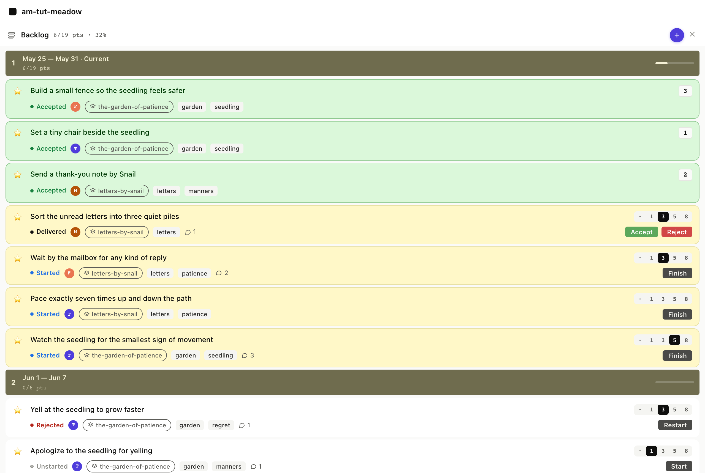

agilemarkdown
The Pivotal Tracker workflow as plain markdown in git. Drive it from a shell, VS Code, or your AI client.
What it is
Keep your backlog as plain markdown in git, then drive it from a CLI, a VS Code extension, or an MCP server. Wrap that in a Pivotal-style coach and you have what Kent Beck calls augmented coding.
The backlog lives next to the code. Stories are markdown files: a small header for metadata, then the body. Priority is a ranked list; the icebox is a capture pile, not ranked. Because the story files sit alongside your code files, the same commit that ships a feature can update the story that asked for it.
Three ways to drive the same files. The shell CLI is the foundation and a prerequisite for the other two. am creates stories, ranks them, estimates them, and moves them from started to delivered to accepted. A VS Code extension lays a board on top: current and icebox columns, drag-to-reorder, a detail panel. An MCP server, am mcp, exposes around fifty tools to Claude Desktop, Claude Code, Cursor, and any other AI client that speaks MCP.
$ am show priority Priority (stories) velocity 7 / iteration ── Iteration 1378 Mon May 25 9 / 7 pts ── 1. ★ Wait by the mailbox for any kind of rep… started 3p 2. ★ Pace exactly seven times up and down th… started 2p 3. ★ Watch the seedling for the smallest sig… started 5p 4. ★ Build a small fence so the seedling fee… accepted 3p 5. ★ Set a tiny chair beside the seedling accepted 1p 6. ★ Send a thank-you note by Snail accepted 2p 7. ★ Sort the unread letters into three quie… delivered 3p ── Iteration 1379 Mon Jun 01 0 / 7 pts ── 8. ★ Yell at the seedling to grow faster rejected 3p 9. ★ Apologize to the seedling for yelling unstarted 1p 10. ★ Decline the dinner party invitation pol… unstarted 2p

Why now
agilemarkdown's first commit landed in 2018, well before AI coding agents arrived. The Pivotal way was worth running then; AI agents make it cheap to do and risky to skip.
The economics flipped. The XP practices the Pivotal way relies on (pair programming, refactor-as-you-go, small batches, test-first work) were treated as too expensive when the industry settled on Scrum in the early 2000s. AI agents changed that math. With an agent in the editor, pair programming costs nothing extra, and refactoring is cheap once the agent does the typing. Kent Beck calls the new mode augmented coding; further reading tracks the wider conversation.
The PM still accepts. "The dev pair never accepts its own work" used to be about humans skipping details on review. With an AI in the dev-pair seat, the same rule catches what AI agents tend to get wrong, which is confidently shipping the wrong thing. Put the acceptance criteria in the story before the agent pulls it, the PM verifies those criteria before flipping the story to accepted, and you avoid shipping fast but wrong.
Install
GitHub Codespaces is the quickest way to try it: one click gives you the CLI, the VS Code extension, and a seeded 54-story demo running in the browser. The native installs take a few minutes.
Try it in your browser
Open in GitHub Codespaces and wait about a minute for the workspace to build. When the editor opens, the demo project lives at /workspaces/am-demo and the board view is already pinned in the sidebar.
The am CLI
Both the VS Code extension and the MCP server call into the am CLI, so install it first. Download a prebuilt binary from the latest release for macOS, Linux, or Windows, or build from source with Go 1.23+ by running go install github.com/mreider/agilemarkdown@latest.
The VS Code extension
Download the agilemarkdown-*.vsix file from the latest release and install it from the Command Palette under Extensions: Install from VSIX…. The board, the detail panel, and the inline pickers all sit on top of your stories/ folder and the same am CLI underneath.
The MCP server
The MCP server is the same binary in MCP mode, run as am mcp once am is on PATH. Wire that command into Claude Code, Cursor, or any other MCP client and the agent gets a Pivotal-style coach plus the ~50 tool calls that cover the workflow. The reference has per-client config snippets.
Where to go from here
Try the tutorial
The tutorial runs a two-iteration scenario end to end: inception, planning, pulling stories, the 8-point cap kicking in, acceptance, retro. Each scene carries a triptych so you can switch any screenshot to shell, VS Code, or Claude Code; the choice carries through the page. About twenty minutes.
Look up the details
The reference covers the repo layout, item schema, state machine, velocity formula, MCP tools, CLI verbs, coach-mode files, and configuration. Use it when you know what you want but forgot the exact field or flag.
Read more
Further reading is the list of essays driving the XP renaissance conversation in the AI era: Kent Beck on augmented coding, Martin Fowler on refactoring, the XP 2025 conference, and the practitioners who are calling the trend by name.
Source code
Code, issues, and releases at github.com/mreider/agilemarkdown.